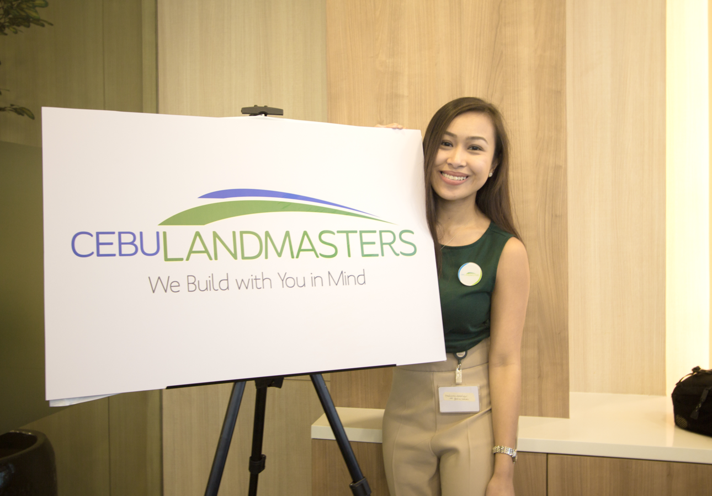
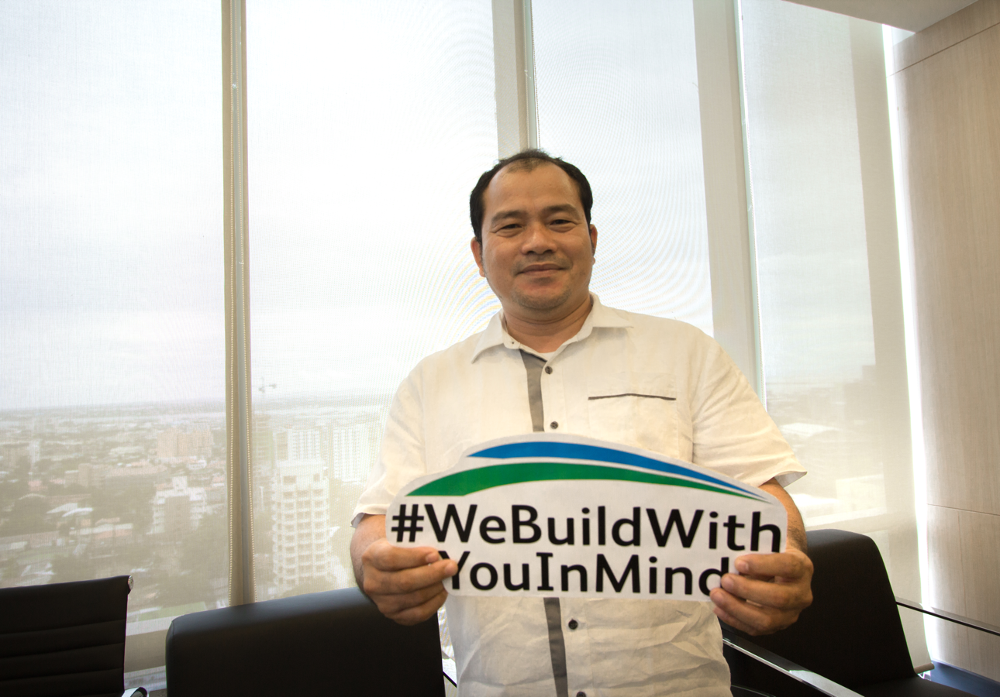

<!DOCTYPE html>
<html lang="en"></html>
<head>
  <title>Cebu Landmasters</title>
  <meta charset="UTF-8"/>
  <meta name="viewport" content="width=device-width, initial-scale=1, maximum-scale=1"/>
  <link rel="shortcut icon" href="favicon.ico"/>
  <link rel="stylesheet" href="assets/css/main.css"/>
  <link rel="stylesheet" href="assets/css/font-awesome.min.css"/>
  <link rel="stylesheet" href="https://cdnjs.cloudflare.com/ajax/libs/animate.css/3.5.2/animate.min.css"/>
</head>
<body>
  <ul class="menu main-nav" data-responsive-menu="drilldown md-dropdown" style="width: 100%">
    <ul> <a href="/"></a></ul>
    <ul>
      <li><a class="active" href="/profile.html">Profile</a></li>
      <li><a a="a" href="/projects.html" id="projects-link">Projects</a>
        <ul class="menu">
          <li><a a="a" href="/projects.html" id="projects-link">Condominium</a>
            <ul class="menu">
              <li><a href="/specific-property.html">Base Line Center</a></li>
              <li><a href="/specific-property.html">Casa Mira Towers</a></li>
              <li><a href="/specific-property.html">Mesaverte Residences</a></li>
            </ul>
          </li>
          <li><a a="a" href="/projects.html" id="projects-link">Subdivision</a>
            <ul class="menu">
              <li><a href="/specific-property.html">Casa Mira South</a></li>
              <li><a href="/specific-property.html">Casa Mira Linao</a></li>
              <li><a href="/specific-property.html">Velmiro Heights</a></li>
              <li><a href="/specific-property.html">Villa Casita</a></li>
              <li><a href="/specific-property.html">Midori Plains</a></li>
            </ul>
          </li>
          <li><a a="a" href="/projects.html" id="projects-link">Offices</a>
            <ul class="menu">
              <li><a href="/specific-property.html">Park Centrale</a></li>
              <li><a href="/specific-property.html">Baseline Center</a></li>
              <li><a href="/specific-property.html">Baseline HQ</a></li>
            </ul>
          </li>
          <li><a a="a" href="/projects.html" id="projects-link">Hotel</a>
            <ul class="menu">
              <li><a href="/specific-property.html">Citadines Cebu City</a></li>
            </ul>
          </li>
        </ul>
      </li>
      <li><a href="/construction-updates.html">Construction Updates</a></li>
      <li><a href="/news.html">News</a></li>
      <li><a href="/">Investor Relations</a></li>
      <li><a href="/careers.html">Careers</a></li>
      <li><a href="/contact.html">Contact Us</a></li>
      <li><a href="mailto:darrell@cebulandmasters.com" id="submit-search"><i class="fa fa-envelope"></i></a></li>
      <li class="show-for-sm-only" id="search-mobile">
        <input type="text" placeholder="Search"/>
      </li>
      <li id="toggle-search"><a href="#"><i class="fa fa-search"></i></a></li>
      <li><a href="#" id="toggle-nav"><i class="fa fa-lg fa-reorder"></i></a></li>
    </ul>
  </ul>
  <div class="search-bar"><i class="fa fa-search"></i>
    <input type="text" placeholder="Search" id="submit-search"/>
  </div>
  <div class="row expanded sub-nav">
    <ul class="tabs" id="nav-tabs" data-tabs="">
      <li class="tabs-title is-active"><a href="#panel1" aria-selected="true">WE BUILD WITH YOU IN MIND</a></li>
      <li class="tabs-title"><a href="#panel2">HISTORY</a></li>
      <li class="tabs-title"><a href="#panel3">OUR PEOPLE</a></li>
    </ul>
    <div class="tabs-content" data-tabs-content="nav-tabs">
      <div class="tabs-panel is-active" id="panel1">
        <div class="row expanded">
          <div class="sm-12 md-10 col sm-centered md-centered mt40 p15 text-center">
            <h1>We Build You in Mind</h1>
            <p class="mt30">Cebu Landmasters, Inc. is a home-grown real estate development company in Cebu. The company is engaged in the development of residential, commercial, hospitality, mixed-use and civic projects. Our company was established in 2003 in the wonderful queen city of the south founded by a true blooded Cebuano entrepreneur. Guided by sincere family values, genuine real estate passion and unrelenting faith, the company is highly committed to its customers and community.</p>
          </div>
        </div>
        <div class="row expanded mt40">
          <div class="section-banner profile"></div>
        </div>
        <div class="sm-12 md-8 sm-centered md-centered mt40 p15 text-center">
          <h3>Our Vision</h3>
          <p>By 2020, CLI envisions to be the leading and a highly diversified real estate developer in Visayas and Mindanao delivering sustainable value for its employees, customers, partners, investors and community.</p>
          <h3 class="mt30">Our Mission</h3>
          <p>To transform properties into exceptional developments where people can proudly live, work and thrive.</p>
          <h3 class="mt30">Our Core Values</h3>
        </div>
        <div class="row core-values-section">
          <div class="sm-12 md-12 lg-6 sm-centered md-centered col core-block"><span class="img"></span><span class="info">
              <p class="heading">HANDS ON SERVICE</p><span class="icons"></span><span>
                <p class="subheading">Inspired with a sincere & genuine real estate passion, we’ve built our business around you, your thoughts, your passions, and dreams. We have mastered hands-on service for your most important journey.</p></span></span></div>
          <div class="sm-12 md-12 lg-6 sm-centered md-centered col core-block"><span class="img"></span><span class="info">
              <p class="heading">VISMIN REAL ESTATE EXPERTISE</p><span class="icons"></span>
              <p class="subheading"> We believe that our purpose is to  create masterfully-built properties for you,  so you can begin your life on the right path. Being the builder of "masterfully-built spaces", we are able to provide the guidance that you need most,  in order to begin their masterful living.</p></span></div>
          <div class="sm-12 md-12 lg-6 sm-centered md-centered col core-block"><span class="img"></span><span class="info">
              <p class="heading">STRINGENT LOCATION SELECTION</p><span class="icons"></span>
              <p class="subheading">We thought of your happiness, your needs, your desires and your future. We thought of where you can reach your maximum potential. Every stone, every piece of land, was chosen because we thought of you.</p></span></div>
          <div class="sm-12 md-12 lg-6 sm-centeredmd-centered col core-block"><span class="img"></span><span class="info">
              <p class="heading">RESPONSIBLE DEVELOPMENT</p><span class="icons"></span>
              <p class="subheading">We thought of your happiness, your needs, your desires and your future. We thought of where you can reach your maximum potential. Every stone, every piece of land, was chosen because we thought of you.</p></span></div>
        </div>
      </div>
      <div class="tabs-panel" id="panel2">
        <row class="expanded">
          <div class="sm-12 md-10 col sm-centered md-centered mt40 p15 text-center">
            <h1>History</h1>
            <p class="mt30">Cebu Landmasters, Inc. is a home-grown real estate development company in Cebu. The company is engaged in the development of residential, commercial, hospitality, mixed-use and civic projects. Our company was established in 2003 in the wonderful queen city of the south founded by a true blooded Cebuano entrepreneur. Guided by sincere family values, genuine real estate passion and unrelenting faith, the company is highly committed to its customers and community.</p>
          </div>
          <div class="row expanded mt40">
            <div class="section-banner history"></div>
          </div>
          <div class="sm-12 md-8 sm-centered md-centered mt40"></div>
          <section class="cd-container" id="cd-timeline">
            <div class="cd-timeline-block">
              <div class="cd-timeline-img cd-logo"></div>
              <div class="cd-timeline-content -first"></div>
            </div>
            <div class="cd-timeline-block">
              <div class="cd-timeline-img cd-node"></div>
              <div class="cd-timeline-content">
                <p>Incorporated from humble beginnings by founder Jose R. Soberano III, the initial motivation was to provide for the housing needs of his employees.</p><span class="cd-date">2003</span>
              </div>
            </div>
            <div class="cd-timeline-block">
              <div class="cd-timeline-img cd-node"></div>
              <div class="cd-timeline-content">
                <p>The company grew and developed a second San Josemaria Village brand in Minglanilla offering the same affordable mid-cost quality homes.</p><span class="cd-date">2007</span>
              </div>
            </div>
            <div class="cd-timeline-block">
              <div class="cd-timeline-img cd-node"></div>
              <div class="cd-timeline-content">
                <p>The year saw the third San Josemaria Village developed in the prospering town of Toledo bringing affordability and quality living closer to the needs.</p><span class="cd-date">2007</span>
              </div>
            </div>
            <div class="cd-timeline-block">
              <div class="cd-timeline-img cd-node"></div>
              <div class="cd-timeline-content">
                <p>The company continued to prosper and launched its fourth San Josemaria Village in Talisay City giving the city dwellers the chance to own.</p><span class="cd-date">2008</span>
              </div>
            </div>
            <div class="cd-timeline-block">
              <div class="cd-timeline-img cd-node"></div>
              <div class="cd-timeline-content">
                <p>The same year the company embarked on its first vertical project at the booming Cebu IT Park by launching its first residential condominium.</p><span class="cd-date">2009</span>
              </div>
            </div>
            <div class="cd-timeline-block">
              <div class="cd-timeline-img cd-node"></div>
              <div class="cd-timeline-content">
                <p>Another feature property was created in one of Cebu’s landmark district, the Baseline Residences. In the same year another residential subdivision.</p><span class="cd-date">2011</span>
              </div>
            </div>
            <div class="cd-timeline-block">
              <div class="cd-timeline-img cd-node"></div>
              <div class="cd-timeline-content">
                <p>Following the success of Midori Plains, the twin-tower Midori Residences was launched in the prime area of AS Fortuna, bridging the two cities of Cebu.</p><span class="cd-date">2012</span>
              </div>
            </div>
            <div class="cd-timeline-block">
              <div class="cd-timeline-img cd-node"></div>
              <div class="cd-timeline-content">
                <p>Park Centrale was launched in one of Cebu’s prime lifestyle district, the Asiatown IT Park. This marked the company’s 1st venture into the office-condo.</p><span class="cd-date">2013</span>
              </div>
            </div>
            <div class="cd-timeline-block">
              <div class="cd-timeline-img cd-node"></div>
              <div class="cd-timeline-content">
                <p>Mivesa Garden Residences was launched. It is the fifth mid-rise condominium development of the company and its 6th to 13th tower.</p><span class="cd-date">2016</span>
              </div>
            </div>
          </section>
        </row>
      </div>
      <div class="tabs-panel" id="panel3">
        <div class="row expanded">
          <div class="sm-12 md-10 col sm-centered md-centered mt40 p15 text-center">
            <h1>Our People</h1>
            <div class="sm-12 person mt40"><span class="img">
                <p class="name">Jose R. Soberano III</p>
                <p class="position">Chairman & CEO</p></span><span class="info">
                <p>Joe Soberano leads Cebu Landmasters, Inc. as its Chairman and CEO. Prior to establishing Cebu Landmasters in 2003, he worked for the Ayala Group of Companies for over 23 years. His experience included various stints with Ayala Investment, Bank of the Philippine Islands and Ayala Land, Inc. He was part of the pioneering group that established Cebu Holdings, the Ayala Land subsidiary in Cebu City, where he led various vertical and horizontal developments, and played an integral part in the development of both the Cebu Business Park and Cebu IT Park – urban redevelopments that have proven vital to Cebu’s economic present and future. He rose through the ranks to become Senior Division Manager at Ayala Land and Vice-President of Cebu Holdings. Joe brings not only his extensive Real Estate Development experience to Cebu Landmasters, but also his passion to positively impact cities and communities through masterfully-planned and executed developments.</p>
                <p>Joe also recognizes his role as a member of the Cebuano community. He has served as president of the Rotary Club of Cebu, president of the Chamber of Real Estate Builders Association (CREBA), and is currently the Chairman of the Board at the Center for Industrial Technology and Enterprise (CITE), a socially oriented institution that offers technical training to less privileged youth.</p>
                <p>Joe graduated with an AB Economics Degree from the Ateneo de Manila University in 1976, and completed the Strategic Business Economics Program (SBEP) at the University of Asia and the Pacific. In July 2015, he became an alumnus of the Harvard University Graduate School of Design after completing the Advanced Management Development Program in Real Estate.</p></span></div>
            <div class="sm-12 person"><span class="img">
                <p class="name">Ma. Rosario B. Soberano</p>
                <p class="position">Executive Vice-President</p></span><span class="info">
                <p>Marose Soberano has been Vice-President of Cebu Landmasters since 2003. She leads the Finance and Accounting functions at CLI, and helps to oversee various facets of ground-up operations of each development. In 1985, she set-up ABSoberano International Corporation, an export business specialized in fashion accessories, gift items, and home decors catering to markets from North America, Europe and Asia. Under her leadership, ABSoberano would rise to become one of the top export companies in Cebu.</p>
                <p>Marose graduated Summa Cum Laude with a BS in Accountancy from St. Theresas College in Cebu, and is a Certified Public Accountant (CPA) by profession. She also obtained a Masters in Business Administration (MBA) degree from the University of the Philippines – Cebu.</p></span></div>
            <div class="sm-12 person"><span class="img">
                <p class="name">Jose Franco B. Soberano</p>
                <p class="position">Senior Vice-President & Chief Operating Officer</p></span><span class="info">
                <p>Franco Soberano joined Cebu Landmasters in 2010. As COO, he works closely with the CEO in directing and managing the key processes and teams at Cebu Landmasters. These include Acquisitions, Business Development, Design & Engineering, Marketing & Sales, Documentation and Property Management. Prior to joining the company, he worked for 4 years as a Project Manager at a multinational firm.</p>
                <p>Franco graduated with a BS Management degree, major in Legal Management, minor in Finance from the Ateneo de Manila University. In 2012, he graduated with a Masters degree in Real Estate Development from Columbia University in New York City. He was part of the Columbia team that qualified as one of the Top 4 Finalists out of 139 teams nationwide at the Gerald D. Hines Urban Design & Development Competition, a reputable multi-disciplinary competition that challenges Graduate degree teams to design comprehensive development solutions for real, large-scale sites.</p>
                <p>As an active member of the community, Franco is a founding member of the Global Shapers – Cebu Hub, an initiative of the World Economic Forum. He has also served as president of the Sacred Heart School – Ateneo de Cebu Alumni Association since 2014.  </p></span></div>
          </div>
        </div>
        <div class="row semi-expanded sm-up-1 md-up-2 lg-up-3 p15 mt20">
          <div class="col"></div>
          <div class="col"></div>
          <div class="col"></div>
          <div class="col"></div>
          <div class="col"></div>
          <div class="col"></div>
          <div class="col"></div>
        </div>
      </div>
      <div id="footer"><span>
          <p>© 2016 Cebu Landmasters</p></span><span>
          <ul>
            <li class="flex -row -center">
              <p>&#xf098; (032) 231-4870</p>
            </li>
            <li><a href=""><i class="fa fa-facebook-square"></i></a></li>
            <li><a href=""><i class="fa fa-envelope-square"></i></a></li>
          </ul></span></div>
    </div>
  </div>
  <script src="assets/js/vendor/jquery.js"></script>
  <script src="assets/js/vendor/foundation.js"></script>
  <script src="assets/js/vendor/foundation.min.js"></script>
  <script src="assets/js/main.js"></script>
  <script>
    $(document).foundation();
    
  </script>
  <script>
    var elem = new Foundation.Tabs(element, options);
    var elem = new Foundation.Tooltip(element, options);
    | $('#element').foundation('toggle');
  </script>
</body>